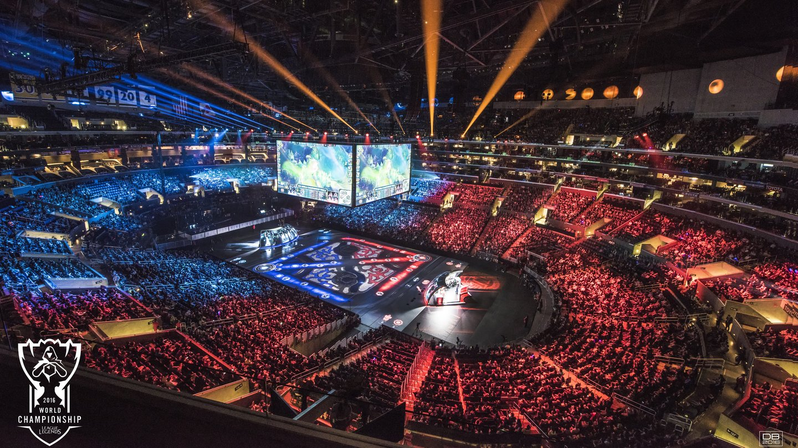

Riot Games é uma empresa americana fundada como um
estúdio de jogos independente em 2006 por Brandon
"Ryze" Beck e Marc "Tryndamere" Merril, em Los Angeles.
[2] A empresa anunciou o seu primeiro jogo, Lol:
Clash of Fates,em outubro de 2008,[3] e lançou o jogo
em outubro de 2009 simplesmente como League of Legends.
O jogo utiliza o modelo free-to-play, apoiado
por microtransações dentro do jogo, em vez de
anúncios ou venda de cópias.
Marvel e Riot Games juntas para criar HQs
A Riot Games, criadora de “League of Legends” (LoL),
fez uma parceria com a Marvel Entertainment em uma
nova série de histórias em quadrinhos para construir
o mundo do game e fornecer maior profundidade aos
personagens. A primeira edição da série de cinco
números, “Lux”, estreou digitalmente em 10 de maio.
Quando concluída, a série estará disponível em
versão impressa
Riot no cenario E-sports
O cenário competitivo de League of Legends (LoL) é um dos
mais estruturados dos esports. O calendário é dividido
anualmente em 13 ligas regionais, entre elas o Campeonato
Brasileiro (CBLoL), além de dois grandes torneios
internacionais: Mid-Season Invitational (MSI) e Mundial
(Worlds). Apenas os melhores times de cada região se
classificam para os eventos globais. Com uma década de
história, as competições do MOBA da Riot Games já
distribuíram US$ 73 milhões (R$ 306,6 milhões) em prêmios

Evento de 10 anos de Lol e outros Games
League of Legends completará 10 anos em 27 de outubro,
e para assoprar as velinhas do melhor jeito possível,
a Riot Games organizou uma série de anúncios feitos
durante uma transmissão ao vivo nesta terça-feira (15).
A ocasião foi marcada por revelar diversos projetos —
alguns, inclusive, com potencial de dissociar a imagem
da Riot de “empresa de LoL”.
Dentre os projetos anunciados, destacam-se um novo jogo
de tiro tático com uma percepção similar a Overwatch,
além de um game de batalha de cartas e até uma animação,
mostrando que a Riot também busca uma expansão para
outros mercados.
Lol o game mais jogado do mundo
League of Legends (LoL) alcançou a marca de 8 milhões
de jogadores simultâneos diariamente, segundo levantamento
da Riot Games nesta terça-feira (17). A divulgação do
número aconteceu junto com o anúncio das comemorações
dos 10 anos do MOBA, que começam no dia 15 de outubro.
Os oito milhões de players superam até mesmo o somatório
das médias diárias de jogadores dos 10 jogos mais populares
na Steam, e torna o LoL o maior jogo de PC do mundo.
Detalhes da ação beneficente: COVID-19
No mês passado, jogadores de todos os cantos do mundo se
juntaram e arrecadaram mais de 630 mil dólares para combater
a COVID-19 durante a transmissão de 48 horas do Mid-Season
Streamathon . A Riot Games também doou mais 4,5 milhões de
dólares para combater a pandemia.
Entretanto, sabemos que ainda há muito trabalho a ser feito,
então realizaremos ações beneficentes no LoL durante as
próximas quatro semanas. Nesse período, doaremos 100% dos
lucros das skins Akali Enfermeira, Kennen Clínico Geral e
Cirurgião Shen (e outros itens relacionados) ao Fundo de
Impacto Social da Riot Games na ImpactAssets, nossa parceira
financeira beneficente.
Empresa Riot Games
Com um total de 846 funcionários distribuídos por suas
sedes, a empresa disse em um comunicado de agradecimento
que tenta fazer com que seu ambiente de trabalho seja
legitimamente um bom lugar para trabalhar.
“Este foi nosso primeiro ano participando da lista, então
nossas expectativas foram surpreendidas pela terceira
colocação”, diz o texto. A empresa também explica como
foi feita a pesquisa, que escolhia e aplicava questionários
sobre a cultura e os programas da companhia à funcionários
aleatórios. “Este processo nos deu a oportunidade de
compartilhar a cultura e as histórias da Riot, mas também
nos deu a chance de fazer um inventário cultural sobre onde


.png)